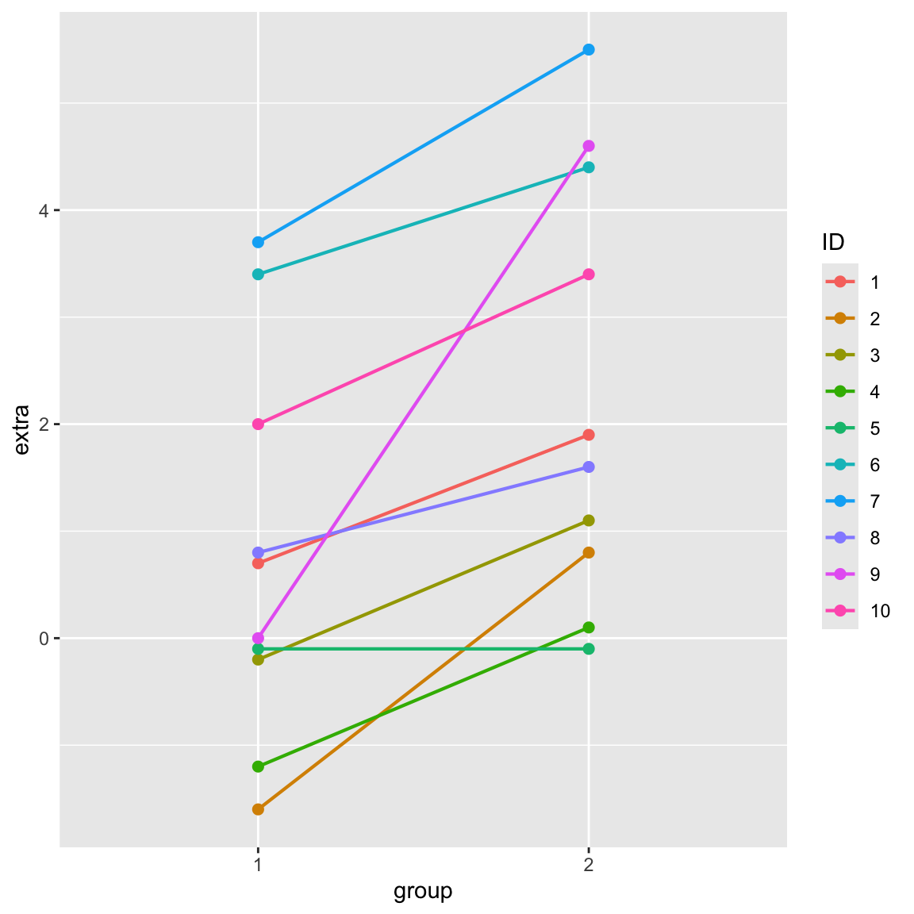

Call:
glm(formula = residence ~ sci_info, family = "binomial", data = x)
Coefficients:
Estimate Std. Error z value Pr(>|z|)
(Intercept) 0.36873 0.02378 15.5 <0.0000000000000002 ***
sci_info 0.19032 0.00672 28.3 <0.0000000000000002 ***
---
Signif. codes: 0 '***' 0.001 '**' 0.01 '*' 0.05 '.' 0.1 ' ' 1
(Dispersion parameter for binomial family taken to be 1)
Null deviance: 80636 on 69513 degrees of freedom
Residual deviance: 79814 on 69512 degrees of freedom
(20 observations deleted due to missingness)
AIC: 79818
Number of Fisher Scoring iterations: 4CHECK-IN : Generalized Linear Models
Try to interpret the linear model below, where we are predicting the probabiliyt of being in an Urban (vs. Rural) Environment from how much the person seeks out information about the science of climate change.
sci_info
LM (Probability) 0.04
GLM/4 (Gelman & Hill Rule) 0.05
Exponentiated GLM (Odds-Ratio) 1.21- Linear Model (LM) Slope - Probability
coef(mod)*100: Multiplying the coefficient by 100 gives you the percentage-point change in the probability that Y = 1 for a one-unit increase in the independent variable. (But violates assumption of heteroscedasticity….so need to check.) - Generalized Linear Model (GLM) Slope (Log-Odds)
coef(cl_glmod)/4: very confusing on its own. Gelman & Hill tell you that dividing this number by 4 gives you the upper bound of the predictive difference in Y that corresponds to a 1-unit increase in X. - Exponentiation Generalized Linear Model Slope (Odds-Ratio)
exp(coef(cl_glmod)): how the odds change between two different outcomes.- Odds Ratio less than 1 = as X increases by 1, the probability of Y decreases (by the difference between the slope and 1).
- Odds Ratio greater than 1 = as X increases by 1, the probability of Y increases (by the difference between the slope and 1).
Deviance = distance between an individual point and our line (non-linear)
Null Deviance = 80636.45 = the total distances with just the intercept to make predictions
Residual Deviance = 79814.33 the total distances after our model makes predictions
Pseudo \(R^2\) = (null deviance - residual deviance) / null deviance = 0.01 = a measure of improvement to the model
AIC = Akaike Information Criterion = a measure of goodness of fit…lower is “better”.
Tipno peeking!!!!

## Dataset and Settings
options(scipen = 999) # removes exponents
options(digits = 2) # rounds to two digits
x <- read.csv("https://www.dropbox.com/scl/fi/kxh61tvf01ur4shqb230h/trust_in_science.csv?rlkey=9ythtv5mz6medhkme3m88j6sk&dl=1",
stringsAsFactors = T)
x$numRes <- as.numeric(x$residence)-1
cl_glmod <- glm(residence ~ sci_info, data = x, family = "binomial") # The generalized Linear model
plot(numRes ~ sci_info, data = x,
xlab = "Scientific Knowledge Seeking",
ylab = "Probability of Being in an Urban Environment")
curve(predict(cl_glmod, data.frame(sci_info=x), type = "resp"), add = T, col = "red", lwd = 2)
### Models
mod <- lm(numRes ~ sci_info, data = x) # Linear Probit Model
summary(cl_glmod)
### Making The Tables
coefz <- rbind(coef(mod)[2], coef(cl_glmod)[2]/4, exp(coef(cl_glmod)[2]))
row.names(coefz) <- c("LM (Probability)", "GLM/4 (Gelman & Hill Rule)", "Exponentiated GLM (Odds-Ratio)")
round(coefz, 2)Project Time : Milestone #2
- Think about the decisions you’ll need to make about your analyses : how are the data structured? what type of linear model might you want to use?
- Link to a pre-registration document. Okay if you change this, and you will learn more about what to do as you analyze the project. But good to set some intentions!
- Graph your DV. What do you learn from this distribution?
- Graph some predictive statistic (linear model). What do you learn about the relationship between these two variables?
Multilevel Models (MLM). Conceptual Understanding
Definition : Multilevel Models (MLM)
Hierarchical linear models, mixed effects models, random effects models, others?
Level 1 : the smallest unit of analysis (where the DV is measured)
Level 2 : organize non-independent responses at Level 1.
Examples :
non-independence : students in a school are similar to each other

non-independence : person at time 1 is still the same person at time 2

The Formulas
The Linear Model
\[\huge y = \beta_0 + \beta_1x_1 + ... + \beta_kx_k + \epsilon\]

Why Are We Doing This?
- The Assumption of Independence Has Been Violated! (MLM increases our power and reliability as scientists.)
- Multiple measures of an individual gives you a more reliable estimate of what and who they are.
- A person serves as their own control, so can more precisely examinine how a person changes over time.
- Model more complex phenomenon.
- How people change over time (within-person variation).
- Simpson’s Paradox
How Do We Do This in R?
Example : The Sleep Dataset
From the ?sleep dataset: “Data which show the effect of two soporific drugs (increase in hours of sleep compared to control).”
- Extra : increase in hours of sleep
- Group : drug given (1 = control; 2 = drug)
- ID : patient ID
library(ggplot2)
ggplot(sleep, aes(y = extra, x = group)) +
geom_point(size=2) +
stat_summary(fun.data=mean_se, color = 'red', size = 1.25, linewidth = 2)
lmod <- lm(extra ~ as.factor(group), data = sleep)
summary(lmod)
Call:
lm(formula = extra ~ as.factor(group), data = sleep)
Residuals:
Min 1Q Median 3Q Max
-2.43 -1.30 -0.58 1.46 3.17
Coefficients:
Estimate Std. Error t value Pr(>|t|)
(Intercept) 0.750 0.600 1.25 0.228
as.factor(group)2 1.580 0.849 1.86 0.079 .
---
Signif. codes: 0 '***' 0.001 '**' 0.01 '*' 0.05 '.' 0.1 ' ' 1
Residual standard error: 1.9 on 18 degrees of freedom
Multiple R-squared: 0.161, Adjusted R-squared: 0.115
F-statistic: 3.46 on 1 and 18 DF, p-value: 0.0792ggplot(sleep, aes(y = extra, x = group, color = ID)) +
geom_point(size=2) +
geom_line(aes(group = ID), linewidth = 0.75)
Fixed Effects : The “Average” across all the grouping variables.
#install.packages("lme4")
library(lme4)
library(lmerTest)
library(Matrix)
mlmod <- lmer(extra ~ as.factor(group) + (1 | ID), data = sleep)
summary(mlmod)Linear mixed model fit by REML. t-tests use Satterthwaite's method [
lmerModLmerTest]
Formula: extra ~ as.factor(group) + (1 | ID)
Data: sleep
REML criterion at convergence: 70
Scaled residuals:
Min 1Q Median 3Q Max
-1.6337 -0.3416 0.0335 0.3151 1.8386
Random effects:
Groups Name Variance Std.Dev.
ID (Intercept) 2.848 1.69
Residual 0.756 0.87
Number of obs: 20, groups: ID, 10
Fixed effects:
Estimate Std. Error df t value Pr(>|t|)
(Intercept) 0.750 0.600 11.081 1.25 0.2373
as.factor(group)2 1.580 0.389 9.000 4.06 0.0028 **
---
Signif. codes: 0 '***' 0.001 '**' 0.01 '*' 0.05 '.' 0.1 ' ' 1
Correlation of Fixed Effects:
(Intr)
as.fctr(g)2 -0.324ggplot(sleep, aes(y = extra, x = group, color = ID)) +
geom_point(size=2) +
geom_line(aes(group = ID), linewidth = 0.75)
ICC = Intraclass Correlation Coefficient = how much the variation in our grouping variable (here : subject) explains total variation.
To calculate : take variance of intercept / total variance
2.8483 / (2.8483 + 0.7564)[1] 0.79OR :
library(performance) icc(mlmod)# Intraclass Correlation Coefficient Adjusted ICC: 0.790 Unadjusted ICC: 0.668
THE END.